Chapter 5: Physical Design: Floorplan to Route¶
Physical design (the 'back end') turns a gate-level netlist into real geometry: where every cell sits on the silicon and how every wire is routed across a dozen or more metal layers. This chapter explains the data formats tools exchange, then follows the implementation flow: floorplanning, power planning, placement, clock tree synthesis and routing, plus the tools and the everyday health checks engineers run. It finishes with timing closure, signal integrity, I/O pads and chip-package-board co-design, multi-voltage implementation, hierarchical design, chiplets and 3D-ICs, and advanced-node challenges.
5.1 Physical Design Data and File Formats¶
Physical design tools exchange information through standard files. The netlist (Verilog) says what is connected; Liberty (.lib) gives timing; LEF describes the shapes of cells and the technology's metal layers; DEF describes the placed and routed design; SDC gives constraints; SPEF holds extracted wire parasitics; and GDSII/OASIS holds the final polygons. Knowing which file carries what is basic PD literacy.

Think of it like…
It is like building a house from several documents: the parts list (netlist), the product catalogue (LEF/LIB), the site plan (DEF), the schedule (SDC) and the final architectural drawings (GDS).
Real-world example
When Elif's block is handed from synthesis to place-and-route, she receives top.v (netlist), top.sdc and top.upf. From the library team she gets tech.lef, cells.lef, memory LEFs and Liberty files for 12 corners. After routing, Innovus writes top.def and SPEF files from Quantus; signoff reads them for STA, and the final top.gds goes to physical verification.
How it works¶
- Inputs to P&R: netlist (.v), constraints (.sdc), power intent (.upf), libraries (.lib, .lef), technology LEF and rule files.
- During P&R: the design lives in a tool database (OpenAccess, NDM, Innovus DB, OpenDB).
- Exchange formats: DEF for placement/routing, SPEF for parasitics, SDF for delays.
- Final layout: GDSII or OASIS merged with cell and macro layouts.
- Signoff tools read GDS/OASIS (DRC/LVS), SPEF + netlist (STA) and DEF (power).
Who uses it
Physical design, CAD and signoff engineers; library and IP teams supply these views.
Key takeaway
Classic interview question: 'What is in a LEF vs a DEF vs a Liberty file?' — LEF = abstract shapes and layers, DEF = actual design placement/routing, LIB = timing and power.
Going deeper
- LEF has two parts: the technology LEF (layers, pitches, vias, sites, antenna rules) and cell/macro LEFs (SIZE, PIN shapes, OBS blockages). Tools must read the technology LEF first.
- DEF coordinates are integers in database units: 'UNITS DISTANCE MICRONS 1000' means 1 µm = 1000 units, so a SKY130 row height of 2.72 µm appears as 2720.
- SPEF (IEEE 1481) stores one *D_NET block per net with *CONN, *CAP and *RES sections; full-chip SPEFs reach tens of gigabytes and are read gzipped, one per RC corner.
- Cell names, pin names and sizes must match across Verilog, Liberty, LEF, CDL and GDS views of a library; any mismatch shows up as link errors, missing pins or LVS failures.
- Native databases (Synopsys NDM, Innovus DB, OpenROAD's OpenDB) are faster and hold more than DEF; LEF/DEF are for exchange between tools, and OpenDB closely follows the LEF/DEF data model.
- GDSII identifies layers only by number pairs (layer/datatype), so a layer map is needed to translate names like 'met1 drawing' into the foundry's numbers.
Common mistakes & misconceptions
- Mixing library releases (LEF from one version, Liberty from another) gives plausible but wrong results; lock every view to the same release.
- Thinking DEF contains timing: it holds geometry and connectivity only. Timing comes from Liberty, SDC and SPEF.
- Reading DEF numbers as microns; divide by the UNITS value first, or die sizes and pin positions will be off by 1000×.
Try it: Part of a DEF file (simplified, SKY130 units: 1000 DBU = 1 µm)¶
VERSION 5.8 ;
DESIGN counter ;
UNITS DISTANCE MICRONS 1000 ;
DIEAREA ( 0 0 ) ( 100000 100000 ) ;
ROW ROW_0 unithd 5520 10880 N DO 162 BY 1 STEP 460 0 ;
TRACKS Y 170 DO 294 STEP 340 LAYER met1 ;
COMPONENTS 2 ;
- u1 sky130_fd_sc_hd__nand2_1 + PLACED ( 10120 10880 ) N ;
- u2 sky130_fd_sc_hd__dfxtp_1 + PLACED ( 15640 10880 ) N ;
END COMPONENTS
END DESIGN
Key concepts, tools, formats, standards & companies¶
| Name | What it does | Example |
|---|---|---|
| Verilog gate-level netlist IEEE 1364/1800 structural Verilog · File format · Physical Design |
Structural description listing cell instances and their connections. | 'NAND2_X1 u5 (.A(n1), .B(n2), .Y(n3));' is one netlist line. |
| LEF (Library Exchange Format) Cadence (openly published; LEF/DEF 5.8) · File format · Physical Design |
Abstract view of cells and macros (size, pins, blockages) plus technology layers and vias. | An SRAM LEF shows its outline, pin locations and metal blockages without internal detail. |
| DEF (Design Exchange Format) Cadence (openly published; LEF/DEF 5.8) · File format · Physical Design |
Describes a specific design's die area, rows, placement, pins and routing. | A floorplan DEF passes macro positions from floorplanning to synthesis. |
| SPEF (Standard Parasitic Exchange Format) IEEE 1481 · File format · Signoff |
Resistance and capacitance of every routed net, produced by extraction for timing analysis. | PrimeTime reads one SPEF per RC corner for signoff STA. |
| OpenAccess (OA) Si2 (originally Cadence) · Standard · Physical Design |
Open database API and format for IC design data, used heavily in custom and mixed-signal flows. | A Virtuoso analog block and an Innovus digital block share data via OpenAccess. |
| Tool databases (NDM, Innovus DB, OpenDB) Synopsys (NDM), Cadence (Innovus), OpenROAD (OpenDB) · File format · Physical Design |
Native internal databases each P&R tool uses to store the design between steps. | OpenROAD saves an .odb file after each stage of the flow. |
| Technology file / tech LEF Foundry / PDK · File format · Physical Design |
Defines metal layers, pitches, widths, spacing and via rules used by routers. | The tech LEF says metal 2 has a 64 nm pitch and runs horizontally. |
| GDSII and OASIS Calma (GDSII); SEMI P39 (OASIS) · File format · Signoff |
Hierarchical polygon formats holding final layout for physical verification and mask making. | The final tapeout database is a multi-gigabyte OASIS file. |
| ITF / QRC techfile / nxtgrd Foundry; Synopsys and Cadence formats · File format · Signoff |
Interconnect technology data describing metal thickness and dielectrics for parasitic extraction. | StarRC uses nxtgrd files built from the foundry's ITF. |
| Floorplan/pin and constraint files (e.g. .tcl, .io) Tool-specific · File format · Physical Design |
Scripts and files capturing die size, pin placement, macro locations and blockages. | A pin-placement file assigns 300 ports along the top and left edges. |
| Sites and rows (SITE, ROW) LEF/DEF placement grid · Concept · Physical Design |
A LEF SITE is the smallest placement slot; DEF ROWs repeat sites across the core so every cell lands on a legal position. | SKY130's unithd site is 0.46 × 2.72 µm, so every hd cell is a whole number of 0.46 µm sites wide. |
| Routing tracks (TRACKS) DEF / tech LEF · Concept · Physical Design |
Evenly spaced lines on each metal layer along which routers draw wires, set by the layer pitch. | SKY130 met1 tracks run horizontally every 0.34 µm; met2 tracks run vertically every 0.46 µm. |
| Abstract vs full layout views Library and IP deliverables · Concept · Physical Design |
P&R works with lightweight LEF abstracts; the full transistor-level GDS of each cell is merged only at stream-out. | An SRAM's LEF is a few kilobytes of pins and blockages; its GDS holds millions of polygons. |
| Power-aware (PG) netlist Written by P&R tools · File format · Signoff |
Verilog netlist that also lists power/ground pins and physical-only cells, used for LVS, power and low-power checks. | The PG netlist shows each cell's VPWR and VGND connected to the right supply net. |
5.2 Floorplanning: Die Size, Macros and I/O¶
Floorplanning decides the overall layout of the chip or block: its size and shape, where large macros like memories and PHYs go, where I/O pins sit, and how much space is left for standard cells. A good floorplan makes everything later easier; a bad one causes congestion, long wires and timing problems that no later step can fix.

Think of it like…
Floorplanning is like arranging furniture in a new flat before moving in: put the big heavy pieces (macros) sensibly first, leave walkways (routing channels), and the small items fit easily afterwards.
Real-world example
Emma floorplans a 4 mm² video block. She places 24 SRAM macros along two edges with their pins facing the logic, leaves 10 µm channels between them for routing, and puts I/O pins near the neighbouring blocks they connect to. Target utilisation is 70 %. Her first try placed memories in the centre; congestion maps showed red hot spots, so she moved them to the periphery.
How it works¶
- Choose die/block size and aspect ratio from area estimates and target utilisation.
- Place I/O pads or block pins to match neighbouring blocks and package.
- Place hard macros (memories, PHYs, analog), oriented with pins toward logic.
- Add placement blockages, halos and routing channels around macros.
- Check early congestion, timing and power estimates; iterate.
Who uses it
Physical design engineers, SoC floorplanners and architects.
Key takeaway
Macros at the edges with pins facing the core, plus halos, is the most common good starting point.
Going deeper
- Typical starting core utilisation is around 60-75 % for logic-heavy blocks; very high utilisation only works for regular, low-congestion logic with few macros.
- Macros are usually stacked in columns along block edges with pins facing the core, avoiding narrow notches and isolated islands of standard cells that are hard to route and buffer.
- Flylines and dataflow views in Innovus and ICC2 (and OpenROAD's RTL-MP macro placer) show which macros talk to which, guiding macro placement before any cell is placed.
- Floorplans are judged by fast trial runs: early global placement, global-route overflow and rough timing. Teams compare several candidates before committing.
- At chip level, the pad ring or bump map is co-designed with the package team: power pad counts per supply, ESD and simultaneous-switching noise all set the I/O plan.
Common mistakes & misconceptions
- Placing macros in the middle of the core slices the standard-cell area into fragments; prefer edges and grouped arrays unless data flow demands otherwise.
- Chasing minimum area with very high utilisation; the savings are lost to congestion, extra buffering and schedule slips.
- Packing macros too tightly without room for power straps and pin access, causing IR hot spots and unroutable pins.
Try it: Floorplan in OpenROAD (SKY130)¶
initialize_floorplan -utilization 60 -aspect_ratio 1.0 \
-core_space 10 -site unithd
make_tracks
place_pins -hor_layers met3 -ver_layers met2
report_design_area
Key concepts, tools, formats, standards & companies¶
| Name | What it does | Example |
|---|---|---|
| Floorplan Physical design step · Concept · Physical Design |
The high-level arrangement of die area, macros, pins and power structures. | The SoC floorplan places CPU, GPU and DDR PHYs in fixed regions. |
| Core utilisation PD metric · Concept · Physical Design |
Percentage of the core area occupied by standard cells and macros. | 70 % utilisation leaves room for buffering and routing. |
| Aspect ratio PD metric · Concept · Physical Design |
Ratio of height to width of the block or die. | A long thin block suits a design with a pipeline flowing left to right. |
| Macro placement PD step · Methodology · Physical Design |
Positioning large hard blocks to minimise wire length and congestion. | Machine-learning macro placers like Cadence's and Synopsys's AI tools suggest arrangements. |
| Halo / keep-out margin PD term · Concept · Physical Design |
A space around a macro where standard cells may not be placed. | A 5 µm halo keeps cells from crowding memory pins. |
| Placement blockage (hard/soft/partial) PD term · Concept · Physical Design |
Areas where placement is forbidden or limited to reduce congestion. | A 50 % partial blockage in a channel limits cell density there. |
| I/O ring and pad cells Chip-level design · Concept · Physical Design |
Special cells at the chip edge providing ESD protection, level shifting and drive for pins. | A wire-bonded chip has a ring of 120 I/O pads around its edge. |
| Flip-chip bump planning Chip-package co-design · Methodology · Physical Design |
Assigning solder bumps across the die area for power and signals in flip-chip packages. | Power bumps are spread evenly to reduce IR drop in the core. |
| Pad-limited vs core-limited Chip-level design · Concept · Physical Design |
Whether die size is set by the number of I/O pads or by the logic area. | A small sensor chip with 100 pins is pad-limited; an AI chip is core-limited. |
| Early congestion analysis PD practice · Methodology · Physical Design |
Estimating routing demand from a quick placement to validate the floorplan. | A congestion map highlights a hot spot near a crossbar, prompting a macro move. |
| Die-size estimation PD practice · Methodology · Physical Design |
Estimating core area from cell area divided by target utilisation, plus macros, power grid, I/O ring and seal ring. | 1.4 mm² of standard cells at 70 % utilisation needs a 2 mm² core before adding 0.8 mm² of SRAM. |
| Placement bounds (guides, regions, fences) PD constraints · Concept · Physical Design |
Constraints keeping a module's cells near or inside an area: guides are soft, regions allow others in, fences are exclusive. | A fence keeps the always-on controller's cells inside its own voltage area. |
| Routing channels PD term · Concept · Physical Design |
Gaps left between macros or blocks so wires and power straps can pass through. | Ten-micron channels between SRAM columns leave room for dozens of signal tracks per layer. |
| Dataflow-driven floorplanning PD practice (Innovus, ICC2, OpenROAD RTL-MP) · Methodology · Physical Design |
Arranging macros and logic by how data flows between them, using flylines and connectivity views. | Flylines show the DMA engine talks mostly to two SRAM banks, so they are placed side by side. |
5.3 Power Planning: Rings, Straps and the Power Grid¶
Every cell needs a supply (VDD) and ground (VSS). Power planning builds the power distribution network (PDN): wide rings around blocks, a mesh of straps on upper metal layers, and rails along each standard-cell row, connected by stacks of vias. The grid must deliver current with little voltage loss (IR drop) and without wearing out wires (electromigration).
Think of it like…
The PDN is like a city's water mains: big pipes from the reservoir, smaller pipes down each street, and a tap at every house. Too-thin pipes mean low pressure at the far end.
Real-world example
For a 15 W block at 0.75 V, about 20 A must flow. Jamal designs a mesh of M10/M11 straps every 20 µm, with M1 rails in each row and via stacks between. Early IR analysis shows 45 mV drop in the centre, above the 5 % budget of 37.5 mV. He adds more straps in the hot spot and decap cells nearby, bringing it to 30 mV.
How it works¶
- Estimate block power and current; set an IR-drop budget (often a few percent of VDD).
- Create power rings around the core and macros.
- Add horizontal/vertical straps on upper metals in a mesh.
- Connect standard-cell rails and macro power pins with via stacks.
- Run early static and dynamic IR/EM analysis; add straps, decaps or bumps where needed.
Who uses it
Physical design and power-integrity engineers.
Key takeaway
Power planning uses routing resources that signals also need: too dense a grid causes congestion, too sparse causes IR drop.
Going deeper
- Current is I = P / V: a 15 W block at 0.75 V draws 20 A. Lower supply voltages mean larger currents, so the same percentage drop needs much lower grid resistance.
- IR budgets are commonly a few percent up to about 10 % of VDD in total, split between package, static and dynamic components; timing libraries or margins assume that voltage loss.
- The PDN competes with signals for tracks: upper-layer straps can consume a large fraction of those layers, so pitch and width are tuned with congestion and IR results together.
- At advanced nodes via resistance dominates, so the number of vias in each stack and the density of rail-to-strap connections matter as much as strap width.
- Power-gated domains have a 'virtual' VDD grid behind header switches; switch count is set by on-state IR drop across switches and by wake-up inrush limits.
- OpenROAD's pdngen describes the grid declaratively: global connections, rings, follow-pin stripes, upper stripes with width/pitch/offset, and connect statements between layers.
Common mistakes & misconceptions
- Sizing the grid for average current only; dynamic droop from simultaneous switching (clock edges, wake-up) is often the real limiter.
- Forgetting macros: SRAMs and PHYs need their PG pins connected with enough vias or they become IR hot spots.
- Assuming more straps is always better; excess straps steal routing tracks and cause congestion and timing loss.
Try it: Power grid with OpenROAD pdngen (SKY130, illustrative values)¶
add_global_connection -net VDD -pin_pattern {^VPWR$} -power
add_global_connection -net VSS -pin_pattern {^VGND$} -ground
set_voltage_domain -power VDD -ground VSS
define_pdn_grid -name core
add_pdn_stripe -grid core -layer met1 -width 0.48 -followpins
add_pdn_stripe -grid core -layer met4 -width 1.6 -pitch 27.14 -offset 13.57
add_pdn_stripe -grid core -layer met5 -width 1.6 -pitch 27.2 -offset 13.6
add_pdn_connect -grid core -layers {met1 met4}
add_pdn_connect -grid core -layers {met4 met5}
pdngen
Key concepts, tools, formats, standards & companies¶
| Name | What it does | Example |
|---|---|---|
| Power distribution network (PDN) PD term · Concept · Physical Design |
The complete network of rings, straps, rails and vias delivering supply to every cell. | The PDN uses about 20 % of upper-metal routing resources. |
| Power rings PD term · Concept · Physical Design |
Wide VDD/VSS wires encircling the core or a macro to feed current from all sides. | An SRAM macro gets its own ring connected to the main mesh. |
| Power straps / mesh PD term · Concept · Physical Design |
Regular grid of power wires across the block on upper metal layers. | M9 vertical and M10 horizontal straps form the main mesh. |
| Standard-cell rails (follow pins) PD term · Concept · Physical Design |
Thin power and ground lines along each cell row connecting to the cells' power pins. | M1 rails alternate VDD and VSS on every row boundary. |
| IR drop Ohm's law (V = I × R) · Concept · Signoff |
Voltage lost across the resistance of power wires, lowering the voltage cells actually see. | A 40 mV drop slows cells and can cause timing failures. |
| Electromigration (EM) Reliability physics · Concept · Signoff |
Gradual movement of metal atoms under high current density, eventually opening or shorting wires. | A thin power strap carrying too much current could fail after 3 years. |
| Decoupling capacitors (decaps) PD element · Concept · Physical Design |
On-chip capacitors that supply charge locally during sudden current demands. | Decap cells near a busy clock buffer reduce dynamic voltage droop. |
| Power switches (header/footer) Low-power PD element · Concept · Physical Design |
Transistor switches inserted in a grid to power-gate a domain. | 800 header switch cells are distributed across the GPU domain. |
| Backside PDN Intel PowerVia; TSMC Super Power Rail · Concept · Physical Design |
Delivering power from the wafer's backside, a new PD task at the most advanced nodes. | On 18A, power straps move under the transistors, freeing front metals for signals. |
| Via stacks and via arrays PD term · Concept · Physical Design |
Columns of vias connecting upper power straps down to lower layers and cell rails; their resistance adds to IR drop. | Each M10-to-M1 stack uses arrays of 2 × 2 vias per level to carry current safely. |
| IR-drop budget Power-integrity target · Concept · Physical Design |
Maximum allowed supply loss, split between package, static grid drop and dynamic droop, agreed early in the project. | At 0.75 V, a 5 % budget allows 37.5 mV of total drop to the cells. |
| Early rail analysis Power-integrity practice · Methodology · Physical Design |
Quick IR-drop analysis on the floorplan using estimated power, used to size the grid before placement. | Rail analysis on the first floorplan shows the centre needs straps every 20 µm instead of 40 µm. |
| PDN generators Innovus add_stripes, ICC2 compile_pg, OpenROAD pdngen · Tool · Physical Design |
Tool commands that build rings, straps, rails and via connections from a pattern description. | An ICC2 compile_pg run rebuilds the whole grid after the floorplan changes. |
5.4 Placement and Optimisation¶
Placement decides the exact position of every standard cell in the rows of the floorplan. First a global placer spreads cells to minimise total wire length and congestion, then legalisation snaps them into legal sites without overlap, and detailed placement fine-tunes. Throughout, optimisation resizes cells, adds buffers and restructures logic to meet timing.
Think of it like…
Placement is like seating guests at a wedding: people who talk a lot (connected cells) sit together, nobody shares a chair (no overlap), and the busy aisles (routing channels) stay clear.
Real-world example
Placing a 2-million-cell block takes a few hours. After global placement, the timing report shows -80 ps WNS. Placement optimisation upsizes 6,000 cells, buffers long nets and swaps some cells to low-Vt, reaching -5 ps. The congestion map shows one hot spot; adding a soft blockage and re-running fixes it, and pre-CTS timing finally passes.
How it works¶
- Global placement: analytically spread cells to minimise wire length and density.
- Legalisation: align cells to rows and sites without overlaps.
- Timing- and congestion-driven optimisation: sizing, buffering, Vt swap, restructuring.
- Scan-chain reordering and placement of special cells (tap, endcap, spare cells).
- Detailed placement: local swaps to improve wire length and timing.
Who uses it
Physical design engineers.
Key takeaway
Placement quality determines routability: watch congestion and cell density maps, not just timing.
Going deeper
- Modern analytic placers (the ePlace/RePlAce family used in OpenROAD) treat cells as charges and density as an electric field, minimising wirelength plus a density penalty with Nesterov-style gradient steps.
- Pre-route timing uses estimated parasitics, so long nets can be off by tens of percent; teams keep some setup margin at placement to absorb the change after routing.
- place_opt-style commands interleave placement with sizing, buffering, Vt swapping and logic restructuring; OpenROAD exposes similar steps as repair_design and repair_timing.
- Target density settings (for example 0.6-0.7 in global placement) deliberately leave whitespace for later buffers, clock cells and hold fixes.
- Scan chains are reordered after placement using SCANDEF so that each chain follows physical proximity, cutting scan wirelength dramatically without changing test coverage.
Common mistakes & misconceptions
- Judging placement only by WNS; check congestion and pin density too, or detailed routing will fail.
- Letting the placer use cells marked dont_use in synthesis or signoff, leading to late library violations.
- Over-constraining with many hard fences and blockages, leaving the optimiser no room to fix timing.
Try it: Placement in OpenROAD¶
global_placement -density 0.6
estimate_parasitics -placement
repair_design
detailed_placement
check_placement -verbose
report_checks -path_delay max
Key concepts, tools, formats, standards & companies¶
| Name | What it does | Example |
|---|---|---|
| Global placement PD step · Concept · Physical Design |
Rough placement of all cells optimising wire length and density, allowing temporary overlaps. | OpenROAD's RePlAce uses an electrostatics analogy to spread cells evenly. |
| Legalisation PD step · Concept · Physical Design |
Moving cells to legal row sites with no overlaps and correct orientation. | Cells snap to 0.46 µm-wide unithd sites on SKY130's 2.72 µm-tall rows. |
| Detailed placement PD step · Concept · Physical Design |
Local cell moves and swaps that improve wire length and timing after legalisation. | Swapping two adjacent cells shortens a critical net. |
| Timing-driven placement PD technique · Methodology · Physical Design |
Placement weighting critical nets so their cells sit closer together. | Cells on a -50 ps path are pulled into a tight cluster. |
| Congestion PD term · Concept · Physical Design |
Areas where routing demand exceeds available tracks, making routing difficult or impossible. | A congestion map shows overflow in red around a dense crossbar. |
| Buffering and repeaters PD optimisation · Concept · Physical Design |
Inserting buffers on long or high-fanout nets to reduce delay and fix transitions. | A 2 mm wire is broken into five segments with repeaters. |
| Vt swapping PD optimisation · Methodology · Physical Design |
Replacing cells with lower or higher threshold-voltage versions to trade speed and leakage. | Non-critical cells are swapped to high-Vt to cut leakage by 30 %. |
| Well taps and endcaps PD special cells · Concept · Physical Design |
Cells connecting wells to supplies (preventing latch-up) and terminating rows. | Tap cells are placed in a checkerboard every 25 µm per foundry rules. |
| Placement density / cell padding PD controls · Concept · Physical Design |
Limits on how tightly cells pack, to leave space for buffers and routing. | Padding around large flops prevents pin-access problems. |
| HPWL (half-perimeter wirelength) Placement metric · Concept · Physical Design |
Fast wirelength estimate: half the perimeter of the box enclosing all pins of a net, summed over nets. | A net whose pins span a 40 × 10 µm box has an HPWL of 50 µm. |
| Pre-CTS optimisation (place_opt) Innovus place_opt_design, ICC2 place_opt, OpenROAD repair_design · Methodology · Physical Design |
Combined placement and optimisation step that sizes, buffers, swaps Vt and restructures logic before CTS. | place_opt cuts WNS from -80 ps to -5 ps while keeping utilisation under 72 %. |
| Relative (structured) placement PD technique · Methodology · Physical Design |
Placing cells of regular datapaths in fixed row/column patterns instead of letting the placer scatter them. | A 64-bit register file's bit slices are aligned in columns, shortening every bus wire. |
| Pre-route parasitic estimation PD timing · Concept · Physical Design |
Before routing, net delays come from estimated Steiner-tree lengths and per-micron RC, not real wires. | OpenROAD's estimate_parasitics -placement lets STA run straight after global placement. |
5.5 Clock Tree Synthesis (CTS)¶
Clock tree synthesis builds the network that delivers the clock from its source to every flip-flop, often hundreds of thousands of them. The goal is for the clock to arrive at all flops at nearly the same time (low skew), with sharp edges, using as little power as possible, because clocks switch every cycle and can use a third of a chip's dynamic power.
Think of it like…
CTS is like a city's water system designed so every house gets water at exactly the same moment, using carefully balanced pipe lengths.
Real-world example
A block has 180,000 flops on a 1.2 GHz clock. Mateo runs CTS with targets of 30 ps skew and 60 ps transition. The tool builds a multi-level buffer tree with 4,200 clock buffers, using double-width, double-spacing routing rules on clock nets to reduce crosstalk. Final skew is 24 ps; clock power is 28 % of the block total. Useful-skew optimisation then fixes the last few setup paths.
How it works¶
- Define clock tree specs: targets for skew, latency, transition and allowed cells.
- Apply non-default routing rules (wider, spaced, shielded) to clock nets.
- Build the tree: cluster sinks, insert buffers/inverters, balance delays.
- Optimise for skew, latency, power; optionally use useful skew.
- Fix hold violations after CTS now that real clock arrival times are known.
Who uses it
Physical design and clock specialists; high-performance CPU teams have dedicated clock-design engineers.
Key takeaway
Before CTS, timing uses ideal clocks; after CTS it uses propagated clocks, which is why hold fixing happens after CTS.
Going deeper
- Clock nets toggle every cycle (activity 1, versus perhaps 0.1-0.2 for typical data nets), which is why the clock network takes such a large share of dynamic power.
- Concurrent clock and data optimisation (CCOpt in Innovus, CCD in Fusion Compiler) targets slack instead of zero skew, applying useful skew automatically where it helps.
- Setup is checked at slow corners and hold at fast ones; real skew appears only after CTS, so bulk hold fixing is done post-CTS with propagated clocks.
- Clock nets are often routed first, on mid or upper layers with double-width/double-space NDRs, and the most sensitive trunks are shielded with VSS wires.
- On-chip variation hits clocks too: CRPR removes pessimism on the shared part of launch and capture paths, so trees with long common trunks show less pessimism.
- OpenROAD's clock_tree_synthesis clusters sinks and builds an H-tree; report_cts summarises buffers inserted, clock subnets and sinks.
Common mistakes & misconceptions
- Aiming for zero skew everywhere; perfectly balanced trees waste buffers and power. Target slack and use skew where it helps.
- Fixing hold before CTS with ideal clocks, which inserts thousands of unnecessary delay cells.
- Leaving generated clocks, dividers and clock muxes out of the CTS spec, so the tool balances through them wrongly.
Try it: CTS and hold fixing in OpenROAD (SKY130)¶
clock_tree_synthesis -root_buf sky130_fd_sc_hd__clkbuf_16 \
-buf_list sky130_fd_sc_hd__clkbuf_4 -sink_clustering_enable
set_propagated_clock [all_clocks]
estimate_parasitics -placement
repair_timing -hold
report_cts
report_clock_skew
Key concepts, tools, formats, standards & companies¶
| Name | What it does | Example |
|---|---|---|
| Clock tree synthesis (CTS) PD step · Methodology · Physical Design |
Automatic construction of a buffered clock distribution network to all sinks. | OpenROAD's TritonCTS builds the clock tree in open-source flows. |
| Clock skew and latency Clock metrics · Concept · Physical Design |
Skew is arrival difference between sinks; latency is delay from clock source to sinks. | Latency 400 ps with 25 ps skew across 100,000 flops. |
| H-tree Clock topology · Concept · Physical Design |
Symmetric recursive H-shaped clock structure giving equal path lengths. | High-performance CPUs use H-tree-based top-level clock distribution. |
| Clock mesh Clock topology · Concept · Physical Design |
A grid of shorted clock wires driven from many points, giving very low skew at high power. | Server CPU cores use clock meshes for robustness to variation. |
| Multi-source CTS Clock topology (Innovus, Fusion Compiler) · Methodology · Physical Design |
Hybrid of a top-level H-tree or mesh feeding local trees. | A GPU uses multi-source CTS for a large, fast clock domain. |
| Useful skew Timing optimisation · Concept · Physical Design |
Intentionally delaying or advancing clocks to some flops to borrow time between stages. | Delaying a capture flop's clock by 20 ps fixes a setup violation. |
| Non-default routing rule (NDR) PD term · Concept · Physical Design |
Wider or more widely spaced routing rules applied to sensitive nets like clocks. | Clock nets use double width, double spacing to cut resistance and crosstalk. |
| Clock gating in CTS PD/low-power · Concept · Physical Design |
Placing and cloning integrated clock-gating cells in the tree to balance and save power. | CTS clones a clock gate driving 3,000 flops into four clones. |
| Hold fixing PD step · Methodology · Physical Design |
Adding delay cells on short paths after CTS so data does not change too soon. | 12,000 hold buffers are inserted at the fast corner. |
| Clock-net pre-routing PD practice · Methodology · Physical Design |
Routing clock nets right after CTS, before signal routing, so they get the best layers, NDRs and shielding. | Clock nets are routed on M5-M6 with double spacing before 2 million signal nets are routed. |
| Skew groups CTS term (Cadence CCOpt and others) · Concept · Physical Design |
Sets of clock sinks that CTS must balance against each other; sinks in different groups need not match. | Flops of the CPU core form one skew group; a slow debug interface forms another. |
| Clock cells (buffers and inverters) Standard-cell libraries · Concept · Physical Design |
Special cells with balanced rise/fall delays used to build clock trees; inverter pairs help preserve duty cycle. | CTS is restricted to CLKBUF and CLKINV cells; ordinary buffers are marked dont_use for clocks. |
| CTS exceptions (stop, ignore and exclude pins) CTS constraints · Concept · Physical Design |
Pins where CTS stops balancing or which it ignores, such as macro clock pins with internal delay. | An SRAM clock pin is given a pin insertion delay so CTS balances it correctly. |
5.6 Routing: Global, Detailed, Layers, Vias and Antenna¶
Routing draws the actual metal wires connecting every pin, across a stack of metal layers joined by vias. Global routing plans rough paths through a grid of regions; track assignment and detailed routing then lay exact wires that obey all the foundry's spacing and width rules. Lower layers are thin and dense for local connections; upper layers are thick and fast for long wires and power.
Think of it like…
Routing is like planning a city's roads on multiple levels: local streets at ground level, flyovers above, and ramps (vias) between levels, all without any two roads crossing on the same level.
Real-world example
Ana routes a 3-million-net block on a 13-metal-layer stack. Global routing shows overflow below 0.5 %, so she proceeds. Detailed routing finishes with 2,300 DRC violations, mostly spacing near memory pins. Search-and-repair iterations reduce them to 12, which she fixes by hand. Antenna checks flag 40 long nets; the router inserts diodes and jumpers to higher layers.
How it works¶
- Global routing: assign nets to coarse routing cells; estimate congestion.
- Track assignment: allocate nets to specific tracks in each layer.
- Detailed routing: draw exact wires and vias obeying design rules.
- Search and repair: fix shorts, spacing and other DRC violations.
- Post-route optimisation: fix timing, crosstalk and antenna problems; add fill later.
Who uses it
Physical design engineers; router developers at EDA companies.
Key takeaway
Know what the antenna effect is and its two fixes: layer jumping and antenna diodes.
Going deeper
- Global routing works on GCells a few tracks wide; very low overflow (well under 1 %) usually predicts a clean detailed route, while hot spots point back to placement or floorplan.
- Wire resistance per micron rises quickly as widths shrink, and via resistance adds up; long or critical nets are promoted to upper, thicker layers.
- Detailed routers follow the tech LEF: SKY130 met1 tracks are 0.34 µm apart running horizontally, met2 0.46 µm vertically, met5 3.4 µm. Advanced nodes add colour and cut rules.
- Antenna rules limit how much metal can connect to a gate during each etch step; the tech LEF encodes them as ratio tables, and routers fix violations with diodes or layer jumps.
- Post-route optimisation runs with real extracted RC and crosstalk; expect some timing loss versus pre-route estimates, especially on long, coupled nets.
- After routing, fillers keep rows continuous; metal fill for density is usually added at the end and checked in signoff.
Common mistakes & misconceptions
- Starting detailed routing with high global-route overflow and hoping the router copes; fix placement or the floorplan first.
- Hand-fixing thousands of DRCs; systematic violations point to pin access, NDR or floorplan problems.
- Ignoring via resistance: long chains of single vias on critical nets hurt timing and electromigration.
Try it: Routing in OpenROAD (SKY130)¶
set_routing_layers -signal met1-met5 -clock met3-met5
global_route -congestion_iterations 50
repair_antennas
detailed_route -output_drc route_drc.rpt
filler_placement sky130_fd_sc_hd__fill*
check_antennas
Key concepts, tools, formats, standards & companies¶
| Name | What it does | Example |
|---|---|---|
| Global routing PD step · Concept · Physical Design |
Coarse routing assigning each net to a path through a grid of routing regions. | Global routing reveals overflow in a channel between two macros. |
| Detailed routing PD step · Concept · Physical Design |
Exact wire and via geometry satisfying all spacing, width and via rules. | TritonRoute performs detailed routing in OpenROAD. |
| Metal stack Foundry technology · Concept · Physical Design |
The set of metal layers (often 10-15+ at advanced nodes) with different thicknesses and pitches. | M0-M3 are tight local layers; the top two thick layers carry power and clock. |
| Via Foundry technology · Concept · Physical Design |
A vertical connection between two adjacent metal layers. | Double vias are used where possible for reliability and lower resistance. |
| Preferred routing direction Router convention · Concept · Physical Design |
Each layer is routed mainly horizontally or vertically, alternating between layers. | M2 horizontal, M3 vertical, M4 horizontal, and so on. |
| Antenna effect Manufacturing physics · Concept · Physical Design |
Charge collected on long wires during etching can damage thin gate oxides connected to them. | A long M2 wire to a gate violates the antenna ratio and needs a diode. |
| Antenna diode / layer jumping PD fix · Methodology · Physical Design |
Fixes for antenna violations: add a discharge diode or break the wire with a hop to a higher layer. | The router jumps a net up to M5 near the gate to cut the antenna ratio. |
| Design rules (DRC rules) Foundry rule deck · Concept · Physical Design |
Geometric rules for width, spacing, enclosure, density and more that layout must obey. | M1 minimum spacing might be tens of nanometres at an advanced node. |
| Redundant via insertion DFM technique · Methodology · Physical Design |
Replacing single vias with double vias to improve yield and reliability. | Post-route, 92 % of vias are converted to redundant vias. |
| Track assignment PD step · Concept · Physical Design |
Step between global and detailed routing that assigns each net segment to a specific track on its layer. | Track assignment spreads a 64-bit bus across adjacent M4 tracks before detailed routing. |
| GCells and overflow Global-routing metric · Concept · Physical Design |
Global routing divides the die into tiles (GCells); overflow counts demand exceeding track capacity at tile edges. | 0.2 % total overflow is fine; 5 % overflow near a macro corner predicts unroutable shorts. |
| Search and repair Detailed-routing technique · Methodology · Physical Design |
Rip-up-and-reroute iterations that remove shorts and spacing violations left after the first routing pass. | Twenty search-and-repair iterations reduce 2,300 DRCs to 12. |
| Filler insertion PD step · Methodology · Physical Design |
Filling empty row gaps with filler or decap-filler cells so wells and implants stay continuous. | filler_placement sky130_fd_sc_hd__fill* fills every gap after detailed routing. |
5.7 Place-and-Route Tools: Innovus, Fusion Compiler, ICC2, Aprisa and OpenROAD¶
Place-and-route (P&R) tools run floorplanning, placement, CTS, routing and optimisation in one environment. Cadence Innovus and Synopsys Fusion Compiler/IC Compiler II dominate commercial work, Siemens Aprisa is a growing alternative, and OpenROAD is the leading open-source option used in LibreLane and research.
Three P&R ecosystems
| Cadence Innovus | Synopsys ICC2 / FC | OpenROAD | |
|---|---|---|---|
| Licence | Commercial | Commercial | Open source (BSD) |
| Placer | GigaPlace | place_opt engine | RePlAce |
| CTS | CCOpt | clock_opt / CCD | TritonCTS |
| Router | NanoRoute | Zroute | FastRoute + TritonRoute |
| Signoff partners | Tempus, Quantus | PrimeTime, StarRC | OpenSTA, OpenRCX |
| Typical users | Mobile, AI, networking SoCs | CPU, GPU, AI SoCs | Education, research, open shuttles |
The engines differ, but the flow stages and concepts are the same everywhere.
Think of it like…
P&R tools are like the construction company that takes the architect's plans and actually builds the house, with each company having its own machinery and methods.
Real-world example
At a large CPU company, the PD team runs Fusion Compiler for synthesis through route, then hands off to PrimeTime for signoff. A networking start-up uses Cadence Genus, Innovus and Tempus. A university group uses OpenROAD-flow-scripts on SKY130 and compares the area of their AI accelerator with a commercial-tool run in a research paper.
How it works¶
- Import netlist, libraries, constraints and floorplan.
- Run floorplan, power plan and placement with optimisation.
- Run CTS and post-CTS optimisation.
- Route and run post-route optimisation.
- Export DEF/GDS/netlist/SPEF for signoff; iterate ECOs.
Who uses it
Physical design engineers; CAD engineers write the flow scripts (often in Tcl and Python).
Key takeaway
Employers usually want experience in Innovus or Fusion Compiler/ICC2; OpenROAD is a great way to learn the concepts first.
Going deeper
- Commercial flows run a handful of 'super commands' (Innovus place_opt_design, ccopt_design, route_design; ICC2 place_opt, clock_opt, route_auto, route_opt), each bundling many engines.
- Foundries certify specific tool versions per node, and projects freeze one version for the whole tapeout because QoR changes between releases.
- OpenROAD-flow-scripts runs Yosys synthesis through KLayout GDS output in Makefile stages (synth, floorplan, place, cts, route, finish) on SKY130, GF180, IHP SG13G2, ASAP7 and others.
- AI design-space optimisation (Synopsys DSO.ai, Cadence Cerebrus) runs many tool-setting variants in parallel and is now common on large blocks.
- Most PD automation is Tcl inside the tools plus Python or Make around them; reading and writing these scripts is an everyday job skill.
Common mistakes & misconceptions
- Learning only tool menus; interviews test flow reasoning (why CTS comes before routing, what place_opt does), which transfers between tools.
- Assuming open-source results match commercial tools at advanced nodes; OpenROAD is excellent for learning and mature nodes but is not foundry-certified for leading-edge nodes.
- Upgrading the tool version mid-project without re-checking QoR and correlation.
Try it: Main P&R stages in two commercial tools (simplified)¶
# Cadence Innovus (Stylus UI)
place_opt_design
ccopt_design
route_design
opt_design -post_route
write_stream final.gds
# Synopsys ICC2 / Fusion Compiler
place_opt
clock_opt
route_auto
route_opt
write_gds final.gds
Key concepts, tools, formats, standards & companies¶
| Name | What it does | Example |
|---|---|---|
| Cadence Innovus Implementation System Cadence Design Systems · Tool · Physical Design · Commercial |
Leading P&R tool for floorplanning, placement, CTS (CCOpt), routing (NanoRoute) and optimisation. | A mobile SoC team implements its GPU blocks in Innovus. |
| Synopsys IC Compiler II (ICC2) and the Fusion Compiler back end Synopsys · Tool · Physical Design · Commercial |
Synopsys's place-and-route engine; inside Fusion Compiler it shares one data model with synthesis for RTL-to-GDS runs. | Job adverts ask for ICC2 skills: place_opt, clock_opt, route_auto and route_opt. |
| Siemens Aprisa Siemens EDA (acquired Avatar Integrated Systems, 2020) · Tool · Physical Design · Commercial |
Detail-route-centric place-and-route tool aimed at fast timing closure. | A team uses Aprisa for blocks with difficult routing congestion. |
| OpenROAD OpenROAD project (UC San Diego-led, Precision Innovations) · Tool · Physical Design · Open source |
Open-source P&R engine: Tcl commands for floorplan, RePlAce placement, TritonCTS, FastRoute/TritonRoute routing, with OpenSTA timing built in. | Students run initialize_floorplan, global_placement and detailed_route interactively in the OpenROAD Tcl shell. |
| OpenROAD-flow-scripts (ORFS) OpenROAD project · Tool · Physical Design · Open source |
Makefile-based reference flow running Yosys and OpenROAD on several open PDKs. | 'make DESIGN_CONFIG=./designs/sky130hd/gcd/config.mk' runs a full flow. |
| ASAP7 predictive PDK Arizona State University and Arm Research · Resource · Physical Design · Open source |
Academic 7 nm FinFET predictive PDK for research (not manufacturable). | Researchers compare placement algorithms on ASAP7 designs. |
| Flow scripts and reference flows EDA vendors, foundries, CAD teams · Concept · Physical Design |
Tcl/Python scripts encoding the recommended steps and settings for a tool and node. | The foundry supplies a reference flow tuned for its N3 library. |
| Design-space exploration with AI (DSO.ai, Cerebrus) Synopsys DSO.ai; Cadence Cerebrus · Tool · Physical Design · Commercial |
AI systems that run many P&R variants and learn the best tool settings automatically. | Cerebrus finds settings giving 8 % lower power than the engineer's best run. |
| Cadence Stylus Common UI Cadence Design Systems · Concept · Physical Design · Commercial |
Shared Tcl command interface and database access across Genus, Innovus and Tempus. | The same get_db queries work in synthesis, P&R and signoff scripts. |
| Flow managers (e.g. Synopsys Lynx) Synopsys Lynx; in-house Make/Python flows · Tool · Physical Design · Commercial |
Frameworks that run each implementation stage in order, track settings and collect QoR metrics. | The CAD team's flow launches 200 block runs each night and publishes a QoR table. |
| Compute farms and job schedulers IBM Spectrum LSF, Slurm, cloud batch · Tool · Whole flow |
Systems queueing thousands of EDA jobs on shared servers, matching jobs to licences and memory. | A route job requests 16 cores and 256 GB through LSF. |
| Hammer UC Berkeley (Chipyard project) · Tool · Physical Design · Open source |
Open-source Python framework that drives commercial or open tools through a common configuration. | Chipyard users switch between commercial and OpenROAD back ends via Hammer configs. |
| Coriolis LIP6, Sorbonne Université · Tool · Physical Design · Open source |
Open-source place-and-route toolchain from French academia, used with open PDKs. | A European research group places and routes a RISC-V core with Coriolis. |
5.8 PD Sanity Checks, Reports and QoR Metrics¶
Throughout place-and-route, engineers run sanity checks and read standard reports to see if a design is healthy: are the input files consistent, is the placement legal, how crowded is the routing, how much timing slack is left, how big is it? Reading these reports quickly and spotting what is wrong is a core everyday skill.
Think of it like…
It is like a doctor's routine check-up: temperature, blood pressure and a blood test give quick numbers that show whether deeper investigation is needed.
Real-world example
Before starting P&R, Priya imports a new netlist and reads the import and constraint checks; they show 14 unconstrained endpoints and 3 cells missing from the LEF. After the inputs are fixed, her nightly dashboard shows WNS -12 ps, 0.3 % route overflow, 68 % utilisation and zero shorts, so she knows her floorplan change helped.
How it works¶
- Check inputs: netlist, libraries and constraints load without errors or ignored commands.
- After placement: legality, density, utilisation and congestion maps.
- After CTS: skew, latency, max transition/capacitance and hold.
- After routing: DRCs, opens and shorts, antenna and power-grid connectivity.
- Every stage: timing summary (WNS, TNS, violating paths) and log warnings, recorded in a QoR dashboard.
Who uses it
PD engineers, CAD/flow engineers and PD leads reviewing block health every day.
Key takeaway
In interviews, describe a debug order: inputs and constraints first, then floorplan and congestion, and only then tool settings.
Going deeper
- A timing report reads top to bottom: clock edge plus clock latency, then each cell and net delay (data arrival), compared with the capture edge minus setup and uncertainty (data required); slack = required − arrival.
- WNS gives the single worst path, TNS the sum over all violating endpoints, and the violating-path count shows breadth; track all three per scenario and path group.
- Congestion is reported as overflow per GCell, layer and direction; hot spots usually trace back to macro corners, high-pin-density cells or blockages.
- P&R logs contain thousands of messages; comparing errors and warnings with the previous good run quickly finds causes like a missing LEF, ignored SDC lines or dont_use conflicts.
- OpenROAD flows write metrics as JSON (METRICS2.1) so dashboards can compare runs automatically; commercial teams build similar in-house dashboards.
Common mistakes & misconceptions
- Ignoring SDC warnings such as 'object not found'; a silently dropped constraint can make timing look clean when it is not.
- Comparing QoR across runs with different constraints, corners or libraries; compare like with like.
- Looking only at the final route report; problems caught at floorplan or placement cost far less to fix.
Try it: Quick health check in OpenROAD/OpenSTA¶
report_checks -path_delay max -fields {slew cap fanout} -digits 3
report_wns
report_tns
report_check_types -max_slew -max_capacitance -max_fanout -violators
report_design_area
check_placement -verbose
Key concepts, tools, formats, standards & companies¶
| Name | What it does | Example |
|---|---|---|
| Design import checks P&R tool import and link reports · Methodology · Physical Design |
At P&R import, confirming every netlist cell has LEF and Liberty views, the SDC applies cleanly and nothing is unresolved. | The import log shows an SRAM instance with no matching LEF macro and 14 outputs without output delays. |
| CTS QoR report report_cts, clock-tree summaries · Concept · Physical Design |
Post-CTS summary of skew, insertion delay, clock transition, buffer count and clock power per clock. | The CTS report shows 24 ps skew, 410 ps latency and 4,200 clock buffers. |
| Library consistency checks CAD practice · Methodology · Physical Design |
Confirming cell and pin names, sizes and pin directions agree across Verilog, Liberty, LEF and GDS views. | A script flags a cell whose LEF lacks the 'SLEEP' pin present in Liberty. |
| Placement legality check check_legality (ICC2), check_placement (OpenROAD) · Methodology · Physical Design |
Verifies every cell is on a legal site, unoverlapped, correctly oriented and outside blockages. | check_placement reports 3 cells overlapping a macro halo after an ECO. |
| QoR summary report report_qor (Synopsys), timing summaries (Cadence) · Concept · Physical Design |
One-page summary of WNS, TNS, violating paths, cell area, cell count and buffers per path group. | report_qor shows reg2reg WNS -12 ps with 41 violating paths. |
| Timing path report report_timing / report_checks · Concept · Signoff |
Detailed path listing launch and capture clocks, each cell and net delay, arrival, required time and slack. | The worst path shows one 120 ps net delay: a wire crossing the whole block. |
| Design-rule violation (DRV) report Max transition, capacitance and fanout checks · Concept · Physical Design |
Electrical-rule violations against Liberty and SDC limits that hurt delay accuracy and reliability. | 86 nets exceed max transition after CTS and are fixed by buffering. |
| Utilisation and density report PD metric · Concept · Physical Design |
Area used by cells versus available, overall and in local bins, to spot overly dense regions. | Overall utilisation is 68 %, but one bin near the crossbar is at 95 %. |
| Connectivity check (opens and shorts) Innovus verify_connectivity and equivalents · Methodology · Physical Design |
In-tool check that every net is fully connected and no two nets touch. | verify_connectivity finds two unrouted pins left after an aborted ECO route. |
| Power-grid connectivity check ICC2 check_pg_connectivity, Innovus PG checks · Methodology · Physical Design |
Confirms every cell and macro power pin connects to the grid with no floating straps. | The check finds an SRAM ring with no via to the main mesh. |
| Route DRC report Router DRC counts · Concept · Physical Design |
The router's own count of shorts, spacing and other violations, before signoff physical verification. | Detailed routing ends with 12 violations, all at one macro corner. |
| Run-to-run QoR tracking Flow dashboards; OpenROAD METRICS2.1 JSON · Methodology · Whole flow |
Recording key metrics from every run so changes in settings or inputs can be compared fairly. | The dashboard shows TNS worsened the night a new SDC was checked in. |
| Log triage PD practice · Methodology · Whole flow |
Scanning tool logs for errors and new warnings, which often reveal the real cause of bad results. | A warning that 200 SDC lines were ignored explains suspiciously clean timing. |
5.9 Timing Closure and ECOs¶
Timing closure is the iterative work of getting every path to meet setup and hold timing in every mode and corner, while keeping power, area, congestion and noise within limits. Late in the project, small changes are made through ECOs (engineering change orders): targeted edits to the netlist and layout rather than re-running the whole flow.

Think of it like…
Timing closure is like tuning an orchestra before a concert: fixing one section's timing can throw off another, so you iterate until everyone is in sync.
Real-world example
Three weeks before tapeout, Yuki's block has 140 setup violations at the slow corner and 2,000 hold violations at the fast corner. PrimeTime's ECO feature proposes cell sizing, Vt swaps and buffer insertions; Innovus implements them incrementally. After four ECO loops, all scenarios are clean. A late functional bug fix arrives as a 20-gate ECO, implemented with spare cells to avoid disturbing the rest.
How it works¶
- Analyse violations by corner/mode and group them by root cause.
- Fix big structural issues early (floorplan, RTL pipelining, constraints).
- Use optimisation: sizing, buffering, Vt swap, useful skew, restructuring.
- Late in the flow, generate signoff-driven ECOs and implement incrementally.
- Re-extract, re-run STA and repeat until all scenarios pass.
Who uses it
PD, STA and implementation engineers; RTL designers help with structural fixes.
Key takeaway
If a path fails by hundreds of picoseconds, fix it in RTL or floorplan; ECO tricks are for the last few tens of picoseconds.
Going deeper
- A useful fix ladder: tens of ps — sizing, Vt swap, useful skew; around 100 ps — buffering, cell relocation, layer promotion; hundreds of ps — RTL retiming, pipelining or a floorplan change.
- Teams track WNS, TNS and the number of violating paths per scenario every day; falling TNS with flat WNS usually means one structural path needs RTL or floorplan attention.
- Setup and hold fixes interact across corners: a hold buffer can break setup elsewhere, so ECO tools optimise all scenarios together.
- Late functional ECOs come from Conformal ECO or Formality ECO as minimal patches, which are proven with LEC before they are implemented physically.
- Late in the project, a change board approves each ECO, and every ECO loop ends with full re-extraction and signoff STA.
Common mistakes & misconceptions
- Over-constraining the whole design (tighter clocks everywhere) to 'make margin'; it inflates area and power. Target the failing paths.
- Spending days on violations caused by constraint bugs; check SDC (missing false paths, wrong generated clocks) before heroic fixes.
- Closing timing in the P&R tool only and discovering signoff STA disagrees; check correlation early.
Try it: Signoff-driven ECO in PrimeTime (simplified)¶
fix_eco_drc -type max_transition
fix_eco_timing -type setup
fix_eco_timing -type hold -buffer_list {DLY1 DLY2}
write_changes -format icc2tcl -output eco_changes.tcl
Key concepts, tools, formats, standards & companies¶
| Name | What it does | Example |
|---|---|---|
| Timing closure PD practice · Methodology · Physical Design |
Iterating design and implementation until all timing requirements are met in all scenarios. | Timing closure on a 3 GHz CPU core can take months. |
| ECO (Engineering Change Order) Industry practice · Methodology · Signoff |
A small, incremental change to the netlist and layout late in the flow. | A functional ECO changes 15 gates to fix a register-reset bug. |
| Timing ECO vs functional ECO Industry terms · Concept · Signoff |
Timing ECOs fix slack without changing function; functional ECOs change logic to fix bugs. | Upsizing a buffer is a timing ECO; inverting a signal is a functional ECO. |
| Signoff-driven ECO tools Synopsys PrimeTime ECO, Cadence Tempus ECO · Tool · Signoff · Commercial |
STA tools that compute fixes using signoff-accurate timing and export them to P&R. | Tempus ECO fixes 3,000 hold violations across 10 scenarios in one pass. |
| Functional ECO tools Cadence Conformal ECO, Synopsys Formality ECO · Tool · Signoff · Commercial |
Tools that compare old and new RTL and generate minimal netlist patches. | Conformal ECO turns a 3-line RTL fix into a 12-gate netlist patch. |
| Incremental implementation PD practice · Methodology · Physical Design |
Updating only changed parts of placement and routing to protect converged results. | ECO routing reroutes 50 nets instead of the whole block. |
| Critical path restructuring RTL/PD practice · Methodology · RTL Design |
Changing logic structure or adding pipeline stages to fix deep timing problems. | Moving a comparison earlier in the pipeline removes 200 ps from a path. |
| Timing budgeting Hierarchical design practice · Methodology · Physical Design |
Splitting chip-level timing into block-level constraints so blocks close independently. | Each block gets 40 % of the cycle for input paths and 40 % for outputs. |
| Tapeout schedule pressure Project reality · Concept · Signoff |
Tight deadlines in the final weeks, requiring disciplined ECO management and change control. | Only ECOs approved by the change board go in during the last two weeks. |
| Path groups STA/optimisation setting · Concept · Physical Design |
Grouping paths (reg-to-reg, input, output, clock-gating) so each group gets its own optimisation focus and reporting. | A separate in2reg group stops I/O paths hiding real reg-to-reg violations. |
| Physically aware ECO PrimeTime ECO, Tempus ECO with layout data · Methodology · Signoff |
Signoff ECO that checks free placement space and routing so fixes are legal in the real layout. | The ECO places a hold buffer in a gap 3 µm from the flop instead of overlapping cells. |
| Guardbands and margins Signoff practice · Concept · Signoff |
Extra timing margin (clock uncertainty, flat derates) covering jitter, model error and unmodelled effects. | Setup uncertainty of 50 ps covers PLL jitter plus a small modelling margin. |
| MCMM-aware ECO fixing Signoff ECO practice · Methodology · Signoff |
Choosing each fix while checking every mode and corner at once, so repairing one scenario does not break another. | A hold buffer is sized so the fast corner passes without creating a setup failure at the slow corner. |
5.10 Signal Integrity: Crosstalk and Noise¶
Wires packed tightly together are coupled by capacitance. When one wire (the aggressor) switches, it can disturb its neighbour (the victim), either slowing or speeding its transition (crosstalk delay) or creating a glitch that may flip a value (crosstalk noise). At advanced nodes, wires are so close that signal integrity must be analysed and fixed on every design.
What an aggressor does to a victim
| Quiet victim | Same direction | Opposite direction | |
|---|---|---|---|
| Effect | Glitch / noise bump | Faster transition | Slower transition |
| Coupling seen | ≈1× Cc injects charge | ≈0× Cc | ≈2× Cc |
| Main risk | False value or reset | Hold violation | Setup violation |
| Checked at | Noise analysis | Min (fast) corner | Max (slow) corner |
| Typical fix | Shield, upsize driver | Space, add delay | Space, upsize, re-layer |
Direction of switching decides whether crosstalk threatens setup, hold or function.
Think of it like…
Crosstalk is like trying to whisper to a friend while someone shouts next to you: the shout can drown out or distort your message.
Real-world example
After routing, Tempus SI analysis shows a victim net running 800 µm alongside a busy data bus. When both switch in opposite directions, the victim's delay grows by 35 ps, causing a setup violation. A glitch analysis also shows a 180 mV bump on a reset line. Lucia fixes both by spacing the nets, upsizing the victim's driver and shielding the reset line with a ground wire.
How it works¶
- Extract coupling capacitances between neighbouring wires.
- Find aggressors whose switching windows overlap the victim's.
- Compute delta delay (crosstalk effect on timing) and glitch noise.
- Fix by spacing, shielding, layer change, driver upsizing or buffering.
- Re-run SI-aware STA in signoff.
Who uses it
PD, STA and signoff engineers; high-speed and analog designers.
Key takeaway
Opposite-direction aggressor switching slows the victim (setup risk); same-direction speeds it up (hold risk).
Going deeper
- At tight pitches, coupling to neighbours is often more than half of a wire's capacitance, so SI must be analysed on every advanced-node design.
- The 0×/2× Miller factors are idealisations; signoff tools compute the actual effect from aggressor and victim waveforms and their timing windows.
- SI analysis iterates: timing windows depend on delays, and delays depend on crosstalk, so tools repeat until the windows converge.
- Glitch checks compare noise height and width against receiver noise-immunity data; a tall but very narrow glitch can be harmless.
- Crosstalk on clock nets adds uncertainty to every flop they drive, which is why clocks get NDR spacing or shielding.
Common mistakes & misconceptions
- Treating SI as a signoff-only problem; enable SI-aware optimisation in post-route so fixes happen in P&R.
- Shielding everything; shields consume tracks and add capacitance. Reserve them for clocks and critical asynchronous signals.
- Assuming same-direction coupling is harmless; speeding up a path can create hold violations.
Key concepts, tools, formats, standards & companies¶
| Name | What it does | Example |
|---|---|---|
| Crosstalk Signal integrity · Concept · Signoff |
Unwanted coupling between adjacent wires through mutual capacitance. | A long bus running beside a clock picks up coupling noise. |
| Aggressor and victim SI terms · Concept · Signoff |
The switching net causing disturbance and the net being disturbed. | Five aggressors switching together create a large glitch on one victim. |
| Crosstalk delta delay SI analysis · Concept · Signoff |
Change in a net's delay due to neighbouring switching, included in SI-aware STA. | A path gains 30 ps of delta delay at the worst corner. |
| Glitch / noise bump SI analysis · Concept · Signoff |
A voltage spike on a quiet net that may propagate as a false transition. | A glitch on an asynchronous reset could reset a block by mistake. |
| Shielding SI fix · Methodology · Physical Design |
Running grounded or powered wires beside a sensitive net to block coupling. | Clock trunks are shielded with VSS wires on both sides. |
| Spacing / NDR for SI SI fix · Methodology · Physical Design |
Increasing distance between sensitive nets to cut coupling capacitance. | Double spacing halves the coupling on a critical net. |
| Timing windows SI analysis · Concept · Signoff |
The time range in which a net can switch; only overlapping windows cause crosstalk. | An aggressor that switches only early in the cycle cannot affect a late victim. |
| Power supply noise (dynamic IR) on timing Power integrity · Concept · Signoff |
Voltage droop during switching that slows cells, analysed together with timing. | IR-aware STA reveals a path failing only during a large switching burst. |
| Electrostatic coupling vs inductive effects SI physics · Concept · Signoff |
On-chip SI is mainly capacitive; inductance matters for very fast, long or package-level signals. | Package and board designers model inductance for SerDes channels. |
| Miller effect on coupling SI physics · Concept · Signoff |
Opposite switching makes coupling capacitance act roughly doubled; same-direction switching makes it nearly vanish. | A victim's 20 fF coupling behaves like about 40 fF when its neighbour switches the opposite way. |
| Noise immunity curves Library data (e.g. CCS noise) · Concept · Signoff |
Library data saying how tall and wide a glitch a cell input can tolerate before the output flips. | A 250 mV, 30 ps glitch is filtered; a 400 mV, 120 ps glitch propagates. |
| SI analysis tools Synopsys PrimeTime SI, Cadence Tempus SI · Tool · Signoff · Commercial |
Signoff STA options computing crosstalk delta delays and glitch noise from coupled parasitics. | PrimeTime SI reports 37 noise violations on long asynchronous nets. |
| Victim driver strength and slew SI robustness · Concept · Physical Design |
Strong drivers and sharp slews make a net harder to disturb; weak drivers on long wires are easy victims. | Upsizing a victim's driver from X1 to X4 removes a 30 ps delta delay. |
5.11 I/O Pads, Package Co-Design and System-Level SI/PI¶
A chip only works if signals and power get in and out cleanly. The pad ring or bump array connects the die to the package, I/O cells drive and receive signals at board voltages and protect against static discharge, and the package and board must deliver clean power and carry fast signals without distortion. Chip, package and board engineers therefore plan these together, which is called co-design.
Think of it like…
The die is a city, the pads are its gates, the package is the motorway network and the board is the national road grid; a perfect city still fails if its gates are too few or its motorways jam.
Real-world example
Brightwave Silicon's networking chip has about 2,400 flip-chip bumps. Early in floorplanning, the package engineer and PD lead agree a bump map: SerDes lanes on the die edge nearest the board connectors, power and ground bumps spread evenly over the core. Package power-integrity simulation shows the 0.75 V rail's impedance rising above target at tens of megahertz, so extra package capacitors are added. IBIS models of the GPIOs go to the board team for their signal checks.
How it works¶
- Count signals, supplies and grounds; choose a wire-bond pad ring or a flip-chip bump array.
- Pick cells from the I/O library: GPIO, high-speed, analog, power, ground, corner and ESD clamp cells.
- Build the pad ring or bump map with the package team, grouping by voltage and spreading power and ground.
- Route the package and simulate signal integrity: reflections, crosstalk, loss and eye diagrams.
- Simulate power integrity from die to board: PDN impedance, decoupling and simultaneous switching noise.
- Hand IBIS models, package models and the pin list to the board team, and iterate until all three agree.
Who uses it
Full-chip integration and physical design engineers, I/O and ESD designers, package designers and SI/PI engineers at chip, OSAT and system companies.
Key takeaway
Remember target impedance: Z_target ≈ allowed ripple ÷ transient current step; 5 % of 0.75 V with a 30 A step gives about 1.25 mΩ.
Going deeper
- Wire-bond dies place pads in a ring at the edge, so pad count can set die size (pad-limited); flip-chip dies spread bumps over the whole area, giving far more I/O and lower-inductance power.
- Package inductance creates di/dt noise: V = L × di/dt, so 1 nH of loop inductance with a 1 A change in 1 ns gives 1 V of noise, which is why power and ground use many parallel pads.
- Power integrity is analysed as impedance versus frequency: the regulator handles low frequencies, board capacitors up to a few megahertz, package capacitors tens of megahertz and on-die capacitance beyond that.
- High-speed interfaces specify loss budgets at the Nyquist frequency; a 112 Gb/s PAM4 lane runs at 56 GBd, so its Nyquist frequency of 28 GHz sets package, board and connector loss limits.
- Bump maps are frozen early because package substrates have long lead times; late bump changes can delay tapeout or force a new package design.
- I/O cells contain level shifting between core and I/O voltages, so pad rings also carry power-on control signals that keep outputs safe while the core supply ramps.
Common mistakes & misconceptions
- Leaving the bump or pad plan to the end; the package and board are on the critical path and need the pin map months before tapeout.
- Under-counting I/O supply and ground pads; simultaneous switching noise then causes failures that only appear in the system.
- Treating SI/PI as the board team's problem; die, package and board share one power network and must be simulated together.
Try it: Target impedance for a core supply in Python¶
vdd, ripple, i_step = 0.75, 0.05, 30.0 # volts, 5 % ripple, amps
z_target = vdd * ripple / i_step
print(f"Z_target = {z_target * 1000:.2f} mOhm") # 1.25 mOhm
# Noise from package inductance: V = L * di/dt
L, di, dt = 1e-9, 1.0, 1e-9 # 1 nH, 1 A change in 1 ns
print(f"L*di/dt = {L * di / dt:.2f} V") # 1.00 V
Key concepts, tools, formats, standards & companies¶
| Name | What it does | Example |
|---|---|---|
| I/O cell library Foundries and I/O IP vendors · IP · Physical design |
Library of pad cells (GPIO, power, ground, analog, corner and filler) matched to the process, package style and board voltages. | A 22 nm SoC uses the foundry's 1.8 V/3.3 V GPIO library, with corner cells joining the ring's supply buses. |
| GPIO pad cell I/O libraries · IP · Physical design |
General-purpose I/O cell with output driver, input receiver, pull-ups or pull-downs, programmable drive strength and slew rate, plus ESD protection. | Firmware sets a GPIO to strong drive for a long cable but slow slew for a nearby LED to cut noise. |
| Core and I/O supply pads Pad-ring and bump planning · Concept · Physical design |
Pads bringing in core supplies and separate I/O supplies; their number is set by current, IR drop, electromigration and noise. | A 15 W chip needs dozens of core power and ground bump pairs but only a few 1.8 V I/O supply pads. |
| ESD bus and rail-clamp spacing I/O and ESD design rules · Concept · Physical design |
Rules limiting each pad's distance from a supply clamp and setting ESD bus widths, so discharge current finds a low-resistance path. | A pad-ring check flags a GPIO too far from the nearest rail clamp, so an extra clamp cell is inserted. |
| Simultaneous switching noise (SSN/SSO) I/O and package design · Concept · Signoff |
Ground bounce and supply droop when many outputs switch together through package inductance; it limits outputs per supply pad. | The I/O vendor's SSO table allows a set number of fast outputs per VDDIO/VSS pair, so the bus gets extra supply pads. |
| IBIS models IBIS Open Forum · Standard · Packaging & test |
Behavioural I/O buffer models made of voltage-current and voltage-time tables, letting board engineers simulate signals without transistor netlists. | The chip team publishes IBIS models so customers can simulate the DDR and GPIO signals on their own boards. |
| IBIS-AMI models IBIS Open Forum (Algorithmic Modelling Interface) · Standard · Packaging & test |
IBIS extension adding executable models of SerDes equalisation and clock recovery, so channel simulators can predict eyes and error rates. | A switch vendor ships IBIS-AMI models of its 112G SerDes so board designers can check their backplane links. |
| S-parameters (Touchstone files) Touchstone format, maintained by the IBIS Open Forum · File format · Packaging & test |
Frequency-domain models of how packages, traces and connectors reflect and pass signals, stored as .sNp files. | The package team sends a 16-port .s16p file of the SerDes routes for the system channel simulation. |
| Eye diagram and channel simulation SI practice · Concept · Packaging & test |
Overlaying many bit periods of a received signal; eye height and width show margin, and channel simulation predicts them before hardware exists. | Simulation shows a closed eye at 32 GT/s until the board trace is shortened and a connector changed. |
| PDN target impedance Power-integrity practice · Concept · Signoff |
The maximum impedance the power network may present across frequency so supply ripple stays within budget during load steps. | The 0.75 V rail with 5 % ripple and a 30 A step needs about 1.25 mΩ across the frequencies that matter. |
| Decoupling hierarchy (die, package, board) Power-integrity practice · Concept · Packaging & test |
Capacitors at each level cover different frequency bands: board bulk capacitors the lowest, package capacitors the middle, on-die capacitance the highest. | An impedance peak at tens of megahertz is fixed with package capacitors, since board capacitors are too far away to help. |
| Chip power model Power-integrity tools (e.g. RedHawk-SC, Voltus) · Concept · Signoff |
A compact electrical model of the die's switching current and capacitance handed to package and board engineers for system PI simulation. | The board team plugs the chip power model into their simulation to size voltage-regulator capacitors. |
| SI/PI simulation tools Cadence Sigrity X and Clarity; Siemens HyperLynx; Synopsys SIwave and HFSS; Keysight ADS · Tool · Packaging & test · Commercial |
Tools that extract package and board electrical models and simulate signal and power integrity from die to system. | An SI engineer extracts the package in a 3D field solver, then runs a DDR5 channel simulation with IBIS models. |
5.12 Implementing Multi-Voltage and Power Domains¶
When a chip has multiple voltages or switchable power domains, physical design must build them: separate regions for each domain, power switches, isolation cells, level shifters and always-on buffers, all following the UPF. The tools read the same UPF used in verification so implementation and simulation agree.
Think of it like…
It is like wiring a building where some floors run on a backup generator, some can be switched off at night, and adapters are needed wherever two different voltage systems meet.
Real-world example
Tariq implements a phone SoC subsystem with three domains: always-on at 0.65 V, a switchable CPU domain at 0.75-1.0 V (DVFS) and a 0.8 V modem. He creates voltage areas in the floorplan, places 1,200 header switches in a staggered daisy chain to limit inrush current, inserts level shifters and isolation cells at boundaries, and uses always-on buffers for control signals routed through the switchable domain.
How it works¶
- Read UPF; create voltage areas (physical regions) for each power domain.
- Build the domain's power grid and insert power switches with an enable chain.
- Place isolation cells, level shifters and retention flops as UPF specifies.
- Route always-on signals with always-on buffers; respect domain boundaries.
- Verify with low-power checks (static UPF checks) and power-aware signoff.
Who uses it
Physical design and low-power implementation engineers.
Key takeaway
Daisy-chaining power-switch enables limits the inrush current that could otherwise cause a voltage dip when a domain wakes up.
Going deeper
- Level shifters are needed when a signal crosses between different voltages (especially low to high); isolation cells clamp outputs of a domain that may be off to 0, 1 or a latched value.
- Isolation is usually powered from an always-on supply and placed per the UPF -location option; the wrong supply or location makes the clamp useless.
- Switch arrays are sized for on-state IR drop across the switches and for wake-up time; daisy-chained enables with an acknowledge spread inrush current over time.
- Dual-rail cells (retention flops, always-on buffers, many level shifters) need a secondary power pin connection, handled by special secondary PG routing.
- Static low-power verification runs at RTL+UPF, on the synthesised netlist and on the final PG netlist, catching missing or wrongly supplied cells at each stage.
Common mistakes & misconceptions
- Placing isolation cells inside the domain being switched off, so they lose power exactly when needed.
- Turning on all power switches at once, causing a large inrush that droops neighbouring domains.
- Using normal buffers on an always-on path through a switchable region; wake-up silently breaks.
Try it: UPF for a switchable CPU domain (simplified)¶
create_power_domain PD_CPU -elements {u_cpu}
create_supply_net VDD_CPU_V -domain PD_CPU
create_power_switch SW_CPU -domain PD_CPU \
-input_supply_port {in VDD} -output_supply_port {out VDD_CPU_V} \
-control_port {en cpu_pwr_en} -on_state {on_s in {en}}
set_isolation iso_cpu -domain PD_CPU -isolation_power_net VDD \
-clamp_value 0 -applies_to outputs
set_isolation_control iso_cpu -domain PD_CPU \
-isolation_signal cpu_iso_en -isolation_sense high
Key concepts, tools, formats, standards & companies¶
| Name | What it does | Example |
|---|---|---|
| Voltage area / power domain region PD term · Concept · Physical Design |
A physical region of the floorplan assigned to one power domain. | The CPU voltage area sits in the top-left of the die with its own grid. |
| Power-switch network Low-power PD · Concept · Physical Design |
An array of header or footer switches connecting a domain's virtual supply to the real supply. | Switches are placed in columns every 40 µm across the domain. |
| Inrush current Power integrity · Concept · Physical Design |
Surge current when a powered-off domain turns on and its capacitance charges. | Staged switch enabling keeps the inrush below the regulator's limit. |
| Always-on buffers Low-power PD · Concept · Physical Design |
Buffers powered from an always-on supply, used to route signals through switchable domains. | A wake-up signal crosses the GPU domain using always-on buffers. |
| Dual-rail cells Low-power libraries · Concept · Physical Design |
Cells with two supply pins, such as level shifters and retention flops. | A retention flop's shadow latch uses the always-on rail. |
| Static low-power verification Synopsys VC LP, Cadence Conformal Low Power, Siemens Questa · Methodology · Signoff · Commercial |
Structural checks that every crossing has correct isolation and level shifting per UPF. | VC LP finds a missing level shifter on a 0.65 V to 0.9 V crossing. |
| Multi-voltage MCMM PD/STA practice · Methodology · Signoff |
Analysing timing with each domain at its own voltage across DVFS operating points. | Timing is signed off at 0.6 V/400 MHz and 1.0 V/2 GHz CPU operating points. |
| Body biasing implementation FD-SOI and some bulk nodes · Concept · Physical Design |
Routing separate well-bias supplies to adjust transistor thresholds at run time. | A 22FDX chip uses forward body bias to boost speed in turbo mode. |
| Power state table UPF · Concept · RTL Design |
Table listing legal combinations of domain states and voltages. | State 'sleep' has CPU off, always-on at 0.6 V, modem off. |
| Isolation and level-shifter placement Low-power PD · Methodology · Physical Design |
Placing boundary cells in the right domain and supply so they work whenever their outputs are needed. | Output isolation cells sit in the always-on domain so they can clamp while the CPU is off. |
| Secondary PG routing Low-power PD · Methodology · Physical Design |
Routing the second supply pin of dual-rail cells (retention flops, always-on buffers) to the correct supply. | Retention flops in the GPU get their VDD_AON pin routed from nearby always-on straps. |
| Switch enable chain Low-power PD · Concept · Physical Design |
Power switches turned on one after another through a daisy chain, with an acknowledge signal at the end. | The power controller waits for the chain's ack before releasing isolation. |
| Implementation (output) UPF IEEE 1801, written by implementation tools · File format · Signoff |
Updated UPF written after synthesis and P&R that reflects the cells and supplies actually inserted. | Signoff low-power checks read the P&R output UPF with the PG netlist. |
5.13 Hierarchical Design and Full-Chip Integration¶
Big SoCs are too large to implement as one flat design, so they are split into blocks (partitions) that teams implement in parallel, then assembled at the top level. Each block gets budgets for timing, pins and power. Abstract models of blocks keep the top-level run manageable. Repeated blocks, like CPU cores, are implemented once and reused many times.
Think of it like…
It is like building a cruise ship in sections at different shipyards and welding them together, with strict agreements about where pipes and cables connect.
Real-world example
A 600 mm² AI chip is divided into 40 partitions: compute tiles (implemented once, placed 64 times), memory controllers, PCIe, NoC routers and a top level. Each partition team receives pin locations and timing budgets. Block teams deliver abstracts (ETMs, LEFs); the top-level team assembles them, routes global nets and runs full-chip signoff, which needs servers with terabytes of memory.
How it works¶
- Partition the design by function, size and physical location.
- Plan pins, feedthroughs and timing/power budgets for each block.
- Implement blocks in parallel; generate abstract models.
- Assemble at top level; route top-level nets, clocks and power.
- Run full-chip signoff, iterating budgets and ECOs between levels.
Who uses it
SoC physical design leads, top-level integrators and block owners.
Key takeaway
Know what an ETM (extracted timing model) or ILM (interface logic model) is: they summarise a block's timing for top-level analysis.
Going deeper
- Partition size balances tool capacity, runtime and team ownership; many teams aim for blocks that complete a full P&R iteration within about a day.
- Timing budgets turn top-level paths into block I/O constraints; budgets are refined as real block timing replaces estimates.
- Abstractions: ETMs keep only interface timing arcs, ILMs keep the interface logic netlist, and LEF abstracts keep the physical outline and pins; top-level runs swap them in to save memory.
- Abutted tile designs need careful feedthrough, clock and power alignment at tile edges; channel-based designs spend area on channels but integrate more easily.
- A block instantiated many times must close timing in every context: different orientations, neighbours and IR environments.
Common mistakes & misconceptions
- Freezing block pins too early without top-level feedback, causing long detours and failing inter-block paths.
- Trusting abstracts blindly; final signoff must use validated models or flat analysis of the assembled chip.
- Budgets that add up to more than the clock period, leaving no time for top-level wires.
Key concepts, tools, formats, standards & companies¶
| Name | What it does | Example |
|---|---|---|
| Partition / block PD term · Concept · Physical Design |
A part of the chip implemented separately as its own physical design. | The GPU is split into 8 shader-core partitions and a top-level glue partition. |
| Top-level integration PD practice · Methodology · Physical Design |
Assembling implemented blocks and finishing chip-level routing, clocks, power and I/O. | The top team routes 20,000 inter-block nets through channels and feedthroughs. |
| Pin assignment PD practice · Methodology · Physical Design |
Deciding where each block's ports sit on its boundary to keep top-level wires short. | Pins of a NoC router face its neighbours to minimise wire length. |
| Feedthrough PD term · Concept · Physical Design |
A signal that passes through a block without being used, to cross the chip. | Abutted designs route top-level nets as feedthroughs through tiles. |
| ETM / ILM / abstract models Timing model types · Concept · Signoff |
Simplified timing models of a block used at top level instead of the full netlist. | An ETM of a CPU core is a Liberty-like file with interface timing arcs. |
| Abutment vs channel-based floorplan PD styles · Concept · Physical Design |
Blocks touching directly (abutted) or separated by top-level routing channels. | Tiled AI chips often use full abutment to avoid wasted channel area. |
| Block reuse (multiply-instantiated modules) PD practice · Methodology · Physical Design |
Implementing an identical block once and placing it many times. | One CPU core layout is placed 16 times, possibly mirrored. |
| Full-chip signoff Signoff practice · Methodology · Signoff |
Running STA, power, DRC and LVS on the complete assembled chip. | Full-chip DRC on a large die uses hundreds of CPU cores for a day. |
| Design data management Perforce, Git, Keysight SOS, Cliosoft (Keysight) · Tool · Whole flow |
Systems that version and share huge design databases across teams. | Each block's tapeout-ready database is tagged and locked in the DM system. |
| Top-level clock distribution SoC PD practice · Methodology · Physical Design |
Delivering clocks from PLLs to every block with controlled latency and skew between blocks. | A balanced top-level tree gives all 16 cores clock latency within 20 ps of each other. |
| Black-box planning Early SoC floorplanning · Methodology · Physical Design |
Planning the chip with estimated block sizes and shapes before block netlists exist. | The top team plans pins and power for an unfinished NPU using a 6 mm² black box. |
| Block LEF abstract Generated by P&R tools · File format · Physical Design |
Physical summary of a finished block (outline, pins, blockages) used by the top-level tools. | The top-level router sees the CPU core only as its LEF outline and pins. |
| Top-level repeaters SoC PD practice · Concept · Physical Design |
Buffers inserted in channels or reserved islands so long inter-block wires meet timing. | A 4 mm NoC link needs repeaters every few hundred micrometres, placed in top-level buffer islands. |
5.14 Chiplets, 2.5D and 3D-IC Design¶
Instead of one huge die, many products now combine several smaller dies (chiplets) in one package. In 2.5D, chiplets sit side by side on a silicon interposer or bridge; in 3D, dies are stacked on top of each other and connected by through-silicon vias or hybrid bonding. Designing these requires new tools that plan and analyse the whole stack: interconnects, power, thermal and stress.
Think of it like…
Chiplets are like building a house from prefabricated modules made in different factories, instead of carving the whole house from one giant block of stone.
Real-world example
Pinecone Compute's AI accelerator uses two N3 compute chiplets, one N6 I/O chiplet and eight HBM stacks on a TSMC CoWoS interposer. Compute dies talk over UCIe. The team uses Cadence Integrity 3D-IC to plan bumps and interposer routing, checks thermal hot spots with Celsius, and verifies die-to-die connectivity with Calibre 3DSTACK. Splitting the design improved yield and let the I/O die use a cheaper node.
How it works¶
- Partition the system into chiplets by function, node and yield.
- Choose integration: 2.5D interposer/bridge, 3D stacking, or fan-out packaging.
- Plan die-to-die interfaces (UCIe, BoW, proprietary) and bump/TSV maps.
- Co-design dies and package: power delivery, signal integrity, thermal, stress.
- Verify the assembly: connectivity (LVS across dies), timing, thermal and test (IEEE 1838).
Who uses it
SoC architects, package and 3D-IC designers, PD and signoff engineers, thermal engineers.
Key takeaway
Know the main reasons for chiplets: better yield, mixing process nodes, reuse, and getting past reticle size limits.
Going deeper
- Smaller dies yield better because yield falls roughly exponentially with die area for a given defect density; chiplets also let I/O and analog stay on cheaper mature nodes.
- Interconnect density climbs from organic substrates (bump pitch around 100 µm or more) to micro-bumps (tens of µm) to hybrid bonding (below 10 µm), multiplying die-to-die bandwidth.
- Short-reach parallel die-to-die links such as UCIe reach sub-picojoule-per-bit energy, far below long-reach SerDes, which makes splitting a design across dies affordable.
- Multi-die signoff adds cross-die LVS/connectivity, cross-die STA, power delivery through TSVs and bumps, and coupled thermal-mechanical analysis.
- Test is planned from the start: die wrappers (IEEE 1838) and known-good-die screening, because one bad die scraps the whole assembly.
Common mistakes & misconceptions
- Assuming chiplets are always cheaper; packaging, test, interface area and power overheads can outweigh yield gains for smaller designs.
- Leaving thermal analysis to the end; stacked dies trap heat, so hot spots must not sit on top of each other.
- Designing each die in isolation; bump maps, power delivery and timing must be co-designed across dies and package.
Key concepts, tools, formats, standards & companies¶
| Name | What it does | Example |
|---|---|---|
| Chiplet Industry term · Concept · Spec/Architecture |
A small die designed to be combined with others in one package to form a complete system. | AMD EPYC processors combine CPU chiplets with a central I/O die. |
| 2.5D integration (interposer, bridge) Packaging architecture · Concept · Packaging & Test |
Dies placed side by side on a silicon interposer or connected by embedded bridges. | GPUs and HBM stacks sit on a silicon interposer in CoWoS packages. |
| 3D-IC (die stacking) Packaging architecture · Concept · Packaging & Test |
Dies stacked vertically and connected through TSVs or hybrid bonds. | A cache die is hybrid-bonded on top of a CPU die. |
| TSV (Through-Silicon Via) 3D technology · Concept · Fabrication |
A vertical copper connection passing through a silicon die. | HBM stacks connect their DRAM layers using thousands of TSVs. |
| Hybrid bonding TSMC SoIC, Intel Foveros Direct, others · Process · Packaging & Test |
Direct copper-to-copper bonding of dies with micron-scale pitch and no solder bumps. | Hybrid bonding allows over 10,000 connections per square millimetre. |
| Cadence Integrity 3D-IC Platform Cadence Design Systems · Tool · Physical Design · Commercial |
Unified planning, implementation and analysis platform for multi-die systems. | Integrity 3D-IC co-optimises bump maps between a logic die and an interposer. |
| Synopsys 3DIC Compiler Synopsys · Tool · Physical Design · Commercial |
Synopsys platform for exploring, implementing and analysing 2.5D/3D multi-die designs. | 3DIC Compiler plans UCIe routing across a silicon bridge. |
| Siemens Innovator3D IC and Calibre 3DSTACK Siemens EDA · Tool · Signoff · Commercial |
Siemens's 3D-IC planning tool and multi-die physical verification extension. | Calibre 3DSTACK verifies that bumps on stacked dies align and connect correctly. |
| Reticle limit Lithography constraint · Concept · Fabrication |
Maximum die size a scanner can expose in one shot, about 26 × 33 mm (858 mm²). | The largest AI chips hit the reticle limit, so they combine multiple dies. |
| Known good die (KGD) Test term · Concept · Packaging & Test |
A die fully tested before assembly so expensive packages are not wasted on bad dies. | Each chiplet is wafer-tested at high coverage before going on the interposer. |
| Thermal and stress analysis Synopsys (Ansys), Cadence Celsius, Siemens · Methodology · Signoff |
Simulating heat flow and mechanical stress in stacked dies and packages. | Thermal analysis shows the top die in a stack reaching 105 °C under load. |
| Die-to-die PHY and bump map Chiplet interface design · Concept · Physical Design |
The interface circuit at a die edge plus the matching arrangement of bumps on both dies. | Both chiplets mirror their UCIe bump maps so lanes line up across the bridge. |
| Micro-bump pitch Packaging technology · Concept · Packaging & Test |
Spacing between die-to-die bumps; finer pitch means more connections per mm² and wider interfaces. | Micro-bumps at tens of µm pitch give far more wires than 100 µm-plus C4 bumps. |
| 3Dblox Introduced by TSMC (2022), open language · Standard · Physical Design |
Open language describing multi-die assemblies (dies, interfaces, stacking) so different EDA tools can share one 3D-IC description. | A team describes its interposer stack once in 3Dblox and loads it into several vendors' tools. |
5.15 Advanced-Node Physical Design Challenges¶
At 7 nm and below, physical design gets harder. Features are smaller than the wavelength of light used to print them, so layers need multiple exposures or EUV, and layout must follow strict patterns. Wires have much higher resistance, pin access is crowded, and variation is larger. Tools and designers must handle many new rules and effects.
Think of it like…
It is like writing with a thick marker on a tiny piece of paper: you can still write, but only in very regular strokes, and every extra line costs space.
Real-world example
Moving from 16 nm to 3 nm, Grace's PD team found that via resistance on lower metals had grown dramatically, so long nets needed promotion to upper layers. Cells needed specific placement spacing rules (e.g. minimum implant widths), and pin access to dense cells caused routing failures until they adjusted cell padding. Runtime also doubled because of the much larger rule decks.
How it works¶
- Understand foundry restrictions: gridded, unidirectional metals, color/mask assignments.
- Handle high wire and via resistance by layer promotion and via pillars.
- Manage cell-placement rules (spacing, abutment, implant) and pin access.
- Model larger variation with POCV/LVF and stricter EM rules.
- Use foundry-certified tool versions and reference flows for the node.
Who uses it
Advanced-node PD engineers, CAD/methodology teams, foundry application engineers.
Key takeaway
Ask foundries and tools 'is this flow certified for the node?': foundry certification of EDA tools is mandatory at advanced nodes.
Going deeper
- Once metal pitch drops below what one DUV immersion exposure can print (roughly 80 nm), layers need multi-patterning (SADP/SAQP) or EUV, forcing gridded, unidirectional wires with separate cut shapes.
- Copper resistivity rises sharply in narrow lines because of barrier layers and scattering; foundries have introduced other metals (such as cobalt or ruthenium) in some of the narrowest local layers.
- Placement legality now includes diffusion-break, Vt-island and cell-edge rules, so placers check neighbour compatibility, not just overlaps.
- Leading-edge rule decks contain thousands of checks; foundry-certified tool versions, reference flows and qualified libraries are released together with the PDK.
- Backside power (Intel PowerVia on 18A, TSMC Super Power Rail on A16) moves the PDN under the transistors, freeing front-side tracks and cutting IR drop but adding thermal and debug challenges.
Common mistakes & misconceptions
- Assuming a smaller node means faster wires; wire RC gets worse every node, so interconnect-aware design matters more.
- Treating colouring as a router detail; colour conflicts in custom IP or late ECOs can make a layout unmanufacturable.
- Using a non-certified tool version 'just to try' at signoff; foundries do not accept its results.
Key concepts, tools, formats, standards & companies¶
| Name | What it does | Example |
|---|---|---|
| Multi-patterning (LELE, SADP, SAQP) Lithography technique · Process · Fabrication |
Printing one layer with two or more exposures or spacer steps to achieve finer pitch than one exposure allows. | At 7 nm DUV, metal layers used self-aligned quadruple patterning. |
| Coloring / mask assignment Multi-patterning design · Concept · Physical Design |
Assigning shapes on one layer to different masks so neighbours are printed separately. | Two adjacent M1 wires must be on different colours (masks). |
| EUV impact on layout rules Foundry design rules at EUV nodes · Concept · Physical Design |
EUV lets some critical layers return to single exposure, easing colouring but adding stochastic-defect-driven line-end and spacing rules. | On EUV layers the router meets fewer colour conflicts but must respect stricter tip-to-tip rules. |
| Via pillars / layer promotion Advanced-node PD technique · Methodology · Physical Design |
Moving critical nets to thicker upper layers and stacking vias to reduce resistance. | Timing-critical nets are promoted to M8 with via pillars from the driver. |
| Pin access Advanced-node routing challenge · Concept · Physical Design |
Whether the router can legally reach each cell pin in crowded areas. | Dense multi-input cells cause pin-access DRCs until spacing is added. |
| Foundry tool certification TSMC, Samsung, Intel Foundry programmes · Concept · Whole flow |
Foundry qualification that a tool version correctly handles a node's rules and models. | Only certified versions of Innovus and Fusion Compiler are used for N2 tapeouts. |
| DTCO (Design-Technology Co-Optimization) Foundries and design houses · Methodology · Fabrication |
Developing process technology and cell/design rules together for the best PPA. | Cell height shrinks from 6 to 5 tracks through DTCO at a new node. |
| Self-heating Device physics (FinFET/GAA) · Concept · Signoff |
Local transistor heating in narrow 3D devices that worsens EM and aging. | Signoff EM checks include self-heating temperature rise on high-activity cells. |
| Layout-dependent effects (LDE) Device physics · Concept · Signoff |
Transistor behaviour changing with nearby layout (well proximity, stress, diffusion length). | A cell placed next to a well edge runs a few percent slower. |
| Gridded, unidirectional routing and cut metal Advanced-node routing rules · Concept · Physical Design |
Lower metals allow only straight wires on fixed tracks in one direction; separate cut shapes split lines. | A jog on M2 is illegal; the router instead hops up to M3 and back. |
| Cell-edge placement rules Advanced-node placement rules · Concept · Physical Design |
Rules on which cell edges, Vt types and implants may sit next to each other. | Two different-Vt cells need a spacer site between them to meet a minimum implant width. |
| Diffusion breaks (single/double) FinFET/GAA layout · Concept · Physical Design |
Breaks in the continuous diffusion between neighbouring cells; their type affects area and transistor speed. | Placing cells to share single diffusion breaks saves sites compared with double breaks. |
| Wire and via resistance scaling Interconnect physics · Concept · Physical Design |
As wires narrow, barrier layers and electron scattering raise resistance much faster than geometry alone predicts. | A long route on a lower metal becomes slower than the logic it connects, so it is promoted upwards. |